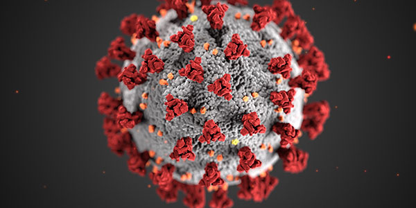
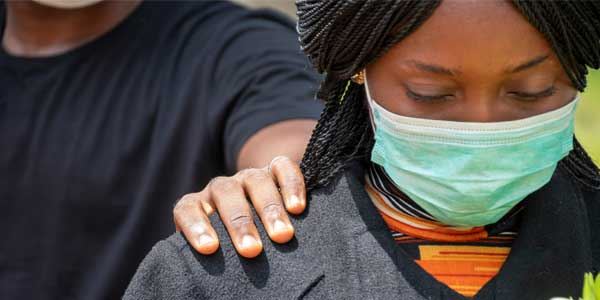
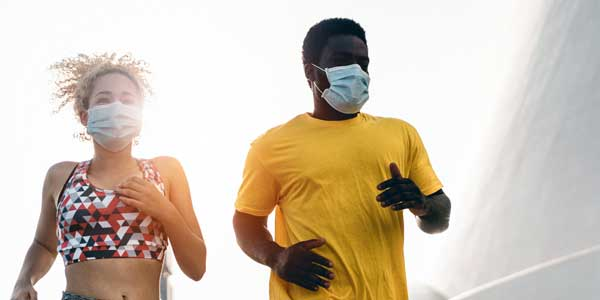
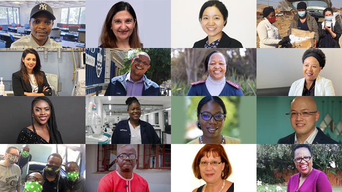

Covid-19 Portal
Covid-19 NewsLatest

Wits researchers are part of a study on how to end Covid-19 as a public health threat
Study provides recommendations to end the public health threat without exacerbating socio-economic burdens or putting the most vulnerable at greater risk.
11 November 2022

Covid disrupts traditional rituals of mourning
We need to find ways to grieve as individuals, and collectively as a nation, or we risk grief becoming chronic, unleashing psychological and physical illnesses.
2 November 2022

Regular physical activity may boost effectiveness of Covid-19 jab
A new study by a team of South African researchers shows the more you exercise, the more protective Covid vaccination seems to be.
25 October 2022
How the lockdown in SA affected mental health
Pasha Podcast: When SARS-CoV-2 emerged, the country took measures to restrict people’s movements and activities, to slow the spread of infections.
22 August 2022

We celebrate staff members who went beyond the call of duty during the Covid-19 pandemic. Those featured here represent just a fraction of the clinical, academic, professional and administrative staff who are contributing in multiple ways to respond to this disaster. #WitsForGood
Meet our heroes------------------------------------------------------------------------------------------------------------------
Quick links
Vaccine Implementation Portal
University updates
Screening tool
Important contacts
------------------------------------------------------------------------------------------------------------------